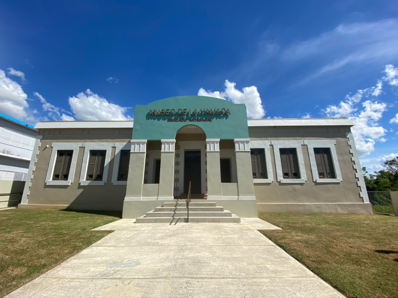

Museo de la Hamaca
La hamaca fue inventada por los habitantes precolombinos de Puerto Rico y el Caribe, el pueblo indígena taíno. En la localidad de San Sebastián se encuentra el Museo de la Hamaca, que recorre la historia y evolución de la hamaca.
Cascada Gozalandia
La Cascada Gozalandia en San Sebastián se ha convertido en uno de los tesoros naturales más visitados en Puerto Rico, también se le conoce como Charca El Roble o el Charco de la Leche. La charca tiene unas impresionantes cascadas (ver fotos) que por su belleza natural, llegaron a ser escenario de la película “A Perfect Gateway” en el 2009; aquí puedes ver el corto de la película donde aparece Gozalandia.
Pueden visitar en:
Casa y Museo Doña Bisa
El Museo Casa de Doña Bisa está ubicado en la localidad de San Sebastián. El museo se encuentra dentro de una propiedad histórica que se ha conservado y restaurado para representar la forma de vida de principios del siglo XX.
Pueden visitar en:
Salto Collazo
El Salto de Collazo es una hermosa cascada que se encuentra a orillas de la carr. #111 de San Sebastián a Lares, a unos 10 minutos del pueblo. Cuando estés de callejeo en San Sebastián tienes que llegar y visitarla. Se puede nadar en una piscina pequeña a los pies de la cascada. Buena para un buen chapuzón y aliviar las calores de la temporada.
Pueden visitar en: